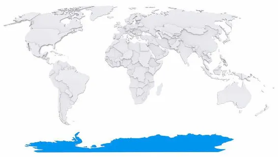

Continentes do Mundo
Continente é uma grande massa de terra que está cercada por água dos mares e dos oceanos. No mundo, existem 6 continentes, e o Brasil é um país que está localizado no continente americano: África (54 países) América (36 países) Antártida (não contém nenhum país) Ásia (50 países) Europa (50 países) Oceania (14 países)
Ásia 45 milhões de km² 4,5 bilhões de habitantes"; América 43 milhões de km² 1 bilhão de habitantes; África 30 milhões de km² 1,2 bilhões de habitantes; Antártida 14 milhões de km² sem população permanente; Europa 10 milhões de km² 740 milhões de habitantes; Oceania 8 milhões de km² 37 milhões de habitantes.
Da divisão desse espaço terrestre surgem os seis continentes do mundo:

Principais caraterísticas dos continentes América O continente americano possui a maior extensão latitudinal do mundo, ocupando, praticamente, todas as faixas de norte a sul. Essa distribuição permite que o continente experimente todas as variações climáticas do planeta, desde as camadas mais quentes da região equatorial às zonas temperadas e camadas polares. Do mesmo modo, observam-se as mais variadas expressões de vegetação, solo e relevo.
Sua extensão territorial é de 42.550.000 km², e a população é estimada em 1 bilhão de habitantes, distribuídos em 35 países e 16 territórios. Sua posição geográfica isola-o completamente de outro continente: a oeste, pelo Oceano Pacífico; a leste, pelo Oceano Atlântico.
O PIB total do continente americano é calculado em 20,3 trilhões de dólares. Os Estados Unidos, isoladamente, respondem por 65% desse montante. As demais nações de destaque econômico no continente são: Brasil, Argentina, Uruguai, Canadá e México.
No que se refere aos aspectos histórico-culturais do continente americano, pode-se subdividi-lo em duas porções: América Anglo-saxônica e América Latina. A primeira refere-se à porção de terras ocupada pelos ingleses e que se constituiu como colônias de povoamento. A segunda foi colonizada por portugueses e espanhóis, em sua maioria, e constituiu-se como colônias de exploração. Considerando que a raiz do idioma dos colonizadores ibéricos é o latim, esses países ficaram conhecidos como latinos.
Outra divisão pode ser feita a partir dos aspectos físicos e naturais do continente e, nesse caso, a subdivisão ocorre entre América do Norte, América Central e América do Sul. Essa divisão considera que o continente é formado por duas massas de terra (América do Norte e América do Sul) ligadas por uma estreita faixa (América Central).
Europa O continente europeu é composto por 50 países e 8 territórios. Suas fronteiras foram diversas vezes alteradas, com os avanços e recuos dos impérios que o conquistaram ao longo dos séculos. Suas fronteiras são: ao norte, Mar Glacial Ártico; a noroeste, mar da Noruega; a leste, o Oceano Atlântico; ao sul, o Mar Mediterrâneo; a sudoeste, o Mar Negro; e, a noroeste, os Montes Urais.
A população do continente europeu é estimada em 743,1 milhões de habitantes, distribuídos em 10.180.000 km². Sua localização geográfica permite que o continente possua distintas variações climáticas: desde a severidade do clima frio do norte, próximo ao Círculo Polar Ártico, e zonas mais amenas de clima temperado ao sul.
O relevo do continente europeu caracteriza-se por elevações de planaltos ao sul, com os Montes Pirineus e os Alpes; a noroeste, com os Montes Escandinavos e, a nordeste, os Montes Urais. O restante do território constitui-se de planícies.
O continente europeu possui os melhores indicadores socioeconômicos do planeta. A elevada arrecadação e concentração de renda faz com que os países da Europa tornem-se objeto de desejo de milhares de migrantes. Atualmente, o continente tem vivenciado a migração de uma enorme população que foge das situações de risco em países do Oriente Médio e África.
África O continente africano possui 54 países e 9 territórios. Sua extensão territorial é de 30.370.000km², e sua população é estimada em 1.216.000 milhões de habitantes. Com uma extensa distribuição latitudinal, o continente ocupa parte do hemisfério norte e parte do hemisfério sul, sendo cortado praticamente ao meio pela linha do Equador. Assim, somente os extremos norte e sul escapam da zona tropical, localizando-se na zona temperada.
Historicamente, o continente caracterizou-se por um conjunto de conquistas, imposições culturais, colonizações e exploração. Ao longo dos séculos, vários países, especialmente europeus, reivindicaram parte do território africano, assim como suas riquezas e sua população. Durante séculos, o continente europeu beneficiou-se dos recursos naturais e humanos oriundos da África.
Apesar de uma imagem cristalizada de um continente pobre, a África possui importantes potências econômicas regionais, como Egito, África do Sul e Nigéria. Destacam-se ainda Argélia, Angola e Líbia como grandes produtores de petróleo. No vasto território do continente africano, ainda se encontram variadas reservas de recursos minerais, como diamante (Botsuana, Congo e Angola) e ouro (Gana, África do Sul e Sudão).
O clima quente e a vegetação de savana são característicos do continente africano, que possui ainda extensos desertos, como o Saara e o Kalarari. A maior parte do relevo do continente é formado por planaltos e depressões – estas acompanham os grandes cursos d'água do continente: Nilo, Congo, Chade e Níger.
Ásia O continente asiático possui 48 países e seis territórios, distribuídos em uma extensão de 44.580.000 km². A população do continente é estimada em 4,436 bilhões de habitantes. Esse é o continente mais populoso do planeta, com destaques para a China (1.376.048.943), Índia (1.311.050.527), Paquistão (188.924.874) e Bangladesh (160.995.642).
O elevado número de habitantes do continente faz com que as desigualdades sociais sejam extremas. Enquanto se observam países altamente desenvolvidos, como a Coreia do Sul e Japão, outros permanecem nas menores faixas de renda, na linha da pobreza, como Nepal e Bangladesh. Deve-se recordar que na Ásia estão alguns dos principais produtores de petróleo do mundo, como Irã e Afeganistão. Além disso, há países que possuem extenso parque industrial, como a China e a Índia.
Entre os aspectos físicos do continente asiático, é possível apontar: ao sul, encontram-se os planaltos, assim como na porção centro-oeste do continente; ao norte e noroeste, planícies predominam. A Ásia ainda possui alguns mares internos, como Mar Cáspio, Mar Aral e Mar Negro
A parte climática do continente asiático também é bastante diversificada em função da sua extensão longitudinal e latitudinal. Assim se observam nas porções de menores latitudes climas quentes – equatorial, tropical úmido e desértico – e, nas zonas de maiores latitudes, climas mais frios, como continental e polar.
Oceania A Oceania é o menor continente do planeta, com 8. 526,000 km². Sua extensão territorial praticamente se confunde com o território da Austrália, de 7.692.000 km², ou seja, um pouco mais de 90% do continente. Assim, alguns autores classificam a Austrália como um país continental. O território restante é distribuído entre 14 micropaíses e 11 territórios.
A população da Oceania é calculada em 21.292.893 habitantes. A Austrália responde por 60% desse quantitativo. Papua-Nova Guiné (6,7 milhões de habitantes) e Nova Zelândia (4,2 milhões) são as outras nações populosas da Oceania.
Os micropaíses que compõem a Oceania, assim como a Austrália, são ilhas que se espalham pelo Oceano Pacífico. Elas são classificadas em Melanésia, Micronésia e Polinésia.
°Melanésia é um conjunto de ilhas que forma uma área de aproximadamente 500.000 km² e localiza-se próximo da Austrália, como Ilhas Fiji, Nova Guiné e Lusíadas. A cor da pele dos habitantes da região serviu de inspiração para seu nome, Melanésia, dado em 1832 pelo francês Jules Dumont d’Urville. A palavra vem do grego melos (que significa “negro”) e nesoi (que quer dizer “ilhas”). “Melanésia” significa, portanto, “ilhas negras”. Pela diversidade de povos que ocupam a região, estima-se que sejam falados 250 idiomas diferentes;
°Micronésia é um pequeno estado independente do Pacífico Sul, localizado a leste das Filipinas e ao norte de Papua-Nova Guiné. Sua área é de 702 km²;
°Polinésia compreende o conjunto de ilhas mais distantes da Austrália, tendo como principais territórios os quatro estados independentes: Kiribati, Samoa, Tonga e Tuvalu.
Antártida (ou Antártica) A Antártida, ou Antártica, é o mais recente a ser explorado e ainda pouco se conhece sobre suas principais características, fauna e flora. Sua dimensão territorial é estimada em 14.000.000 km². Sua população caracteriza-se basicamente por pesquisadores, que se revezam na intenção de desenvolver pesquisas e trabalhos científicos sob condições extremas.
Atualmente, existem no território antártico 29 bases de pesquisa de diversos países. A base brasileira na Antártida chama-se Ferraz de Vasconcelos e foi instalada em 1984.
Por uma convenção internacional, definiu-se que o território antártico não pertence a nenhum país, não podendo ser reivindicado ou invadido sob nenhum pretexto. Conhecido como Tratado da Antártida, foi assinado em 1 de dezembro de 1959.
A Antártida é o mais frio e seco continente do mundo. Suas temperaturas podem alcançar -89ºC, e suas médias de precipitação são extremamente baixas, em torno de 30 mm a 70 mm. Desse modo, pode-se afirmar que o continente é um imenso deserto frio.